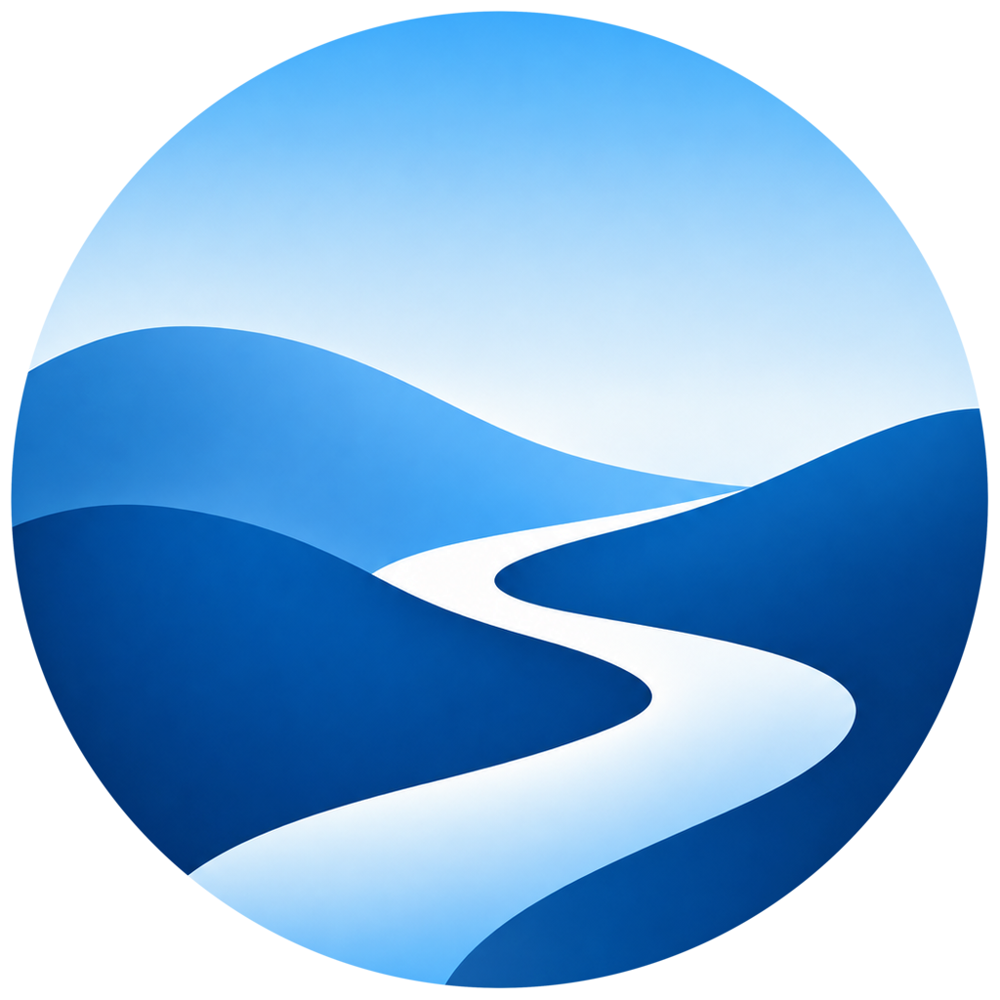
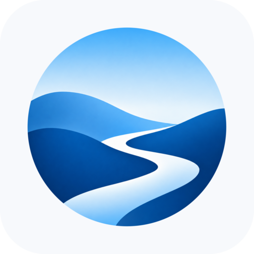
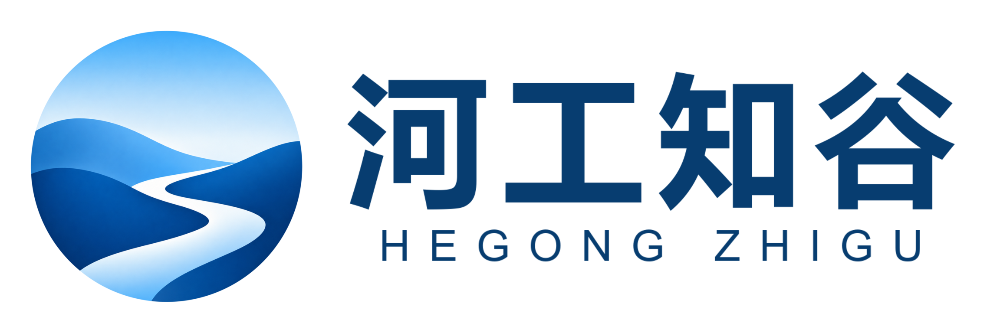
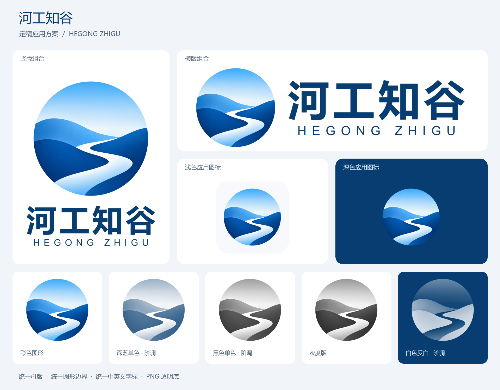

以选定的圆形山谷为主标识，保留圆润山势与曲折河道。所有应用组件由同一母版生成。

HEGONG ZHIGU
山谷承载知识，河流连接持续学习。蓝色层次建立远近关系，白色河道形成视觉中心。
桌面与小尺寸入口使用独立图形；品牌展示使用中英文字标组合。
浅色环境 · 透明图形
深色环境 · 透明图形

浅色底板 · 应用示意
中文组合字标：微软雅黑 Bold。英文组合字标：Arial，以字距形成秩序。图形渐变以透明 PNG 母版为准。

